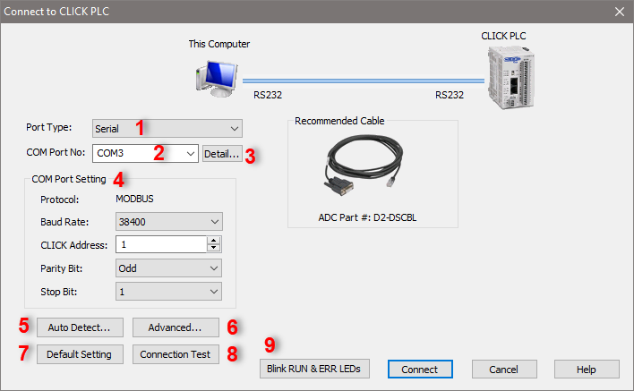
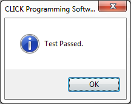
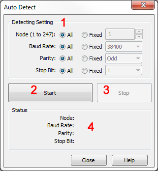
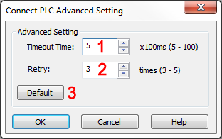

Topic: CL199

| Connect to CLICK PLC (Serial) |
Topic: CL199
|
Use this window to Connect the CLICK PLC Programming Software to the target CLICK PLC.


1 Port Type: Select the Communication Port Type on this computer to connect to the target CLICK PLC.
2 COM Port No.: Select the COM Port Number of the Serial Port on this computer.
3 Detail: Click on this button to see a list of COM Ports available on this computer.
4 COM Port Setting: Match the COM Port Settings to the RS-232 port setting on the CLICK CPU module. If Port 1 on the CLICK CPU Module is RS-232 port, the Port setup is fixed as shown below. This is the default setup of Port 2 also.
• Protocol: MODBUS
• Baud Rate: 38400
• CLICK Address: 1
• Parity Bit: Odd
• Stop Bit: 1
5 Auto Detect: Select Auto Detect to open the Auto Detect dialog.
6 Advanced: Select Advanced to open the Advanced Setting dialog.
7 Default Setting: It is always possible to return to the CLICK PLC Default Port Settings by clicking the Default Setting button.
8 Connection Test: To Test the settings, click the Connection Test button. If the settings are working, you will see the Test Passed message. Click the OK button.

9 Blink RUN & ERR LEDs: Click to flash the RUN and ERR LEDs on the selected PLC, to verify that the correct PLC is selected.
The message shown below will appear if the offline program does not match the PLC program. See Connect and Read Project from PLC. Select Read the Project from the PLC or Don't read the project from the PLC and click OK.

If a password has been established, the Password dialog will appear. Enter the password in the space provided on the dialog. Click OK to open the project in the Ladder Editor.


1 Detect Setting: Specify the Com Port setup that you want to use to detect the PLC.
2 Start: Click this button to Start the Auto Detect process.
3 Stop: Click this button to Stop the Auto Detect process.
4 Status: This Status area displays the current Com Port setup that the Auto Detect process is trying.
Once the Auto Detect process completes and the PLC has been located, the message shown below will display.


1 Timeout Time: Specify the Time Interval to wait for a response from the PLC.
2 Retry: Specify the number of Times to try to connect to the PLC.
3 Default: Reset the setup parameters to the Defaults.
Timeout Time = 5
Retry = 3